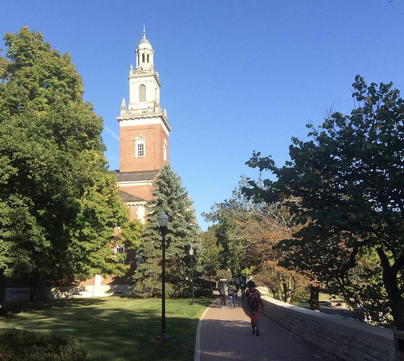

Denison University
Granville, Ohio

Where T. Townsend Brown studied for a year in 1924. He said he ran experiments there with astronomy professor Paul Alfred Biefeld on what became known as the Biefeld-Brown effect, a thrust produced by high-voltage capacitors, but Denison says it has no record of such experiments. Most physicists attribute the effect to ion wind. 1
Open in the interactive Watcher
Related
- T. Townsend Brown Person
Sources
- Thomas Townsend Brown Wikipedia